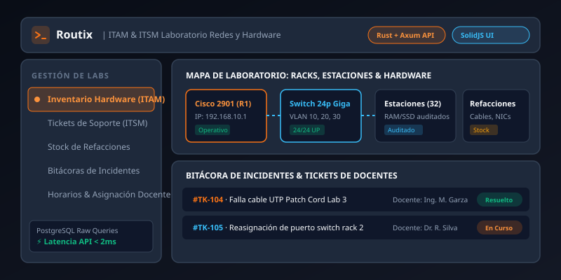

Sobre el Proyecto
Los laboratorios académicos de redes y arquitectura de computadoras operan bajo un flujo constante de manipulación de hardware: routers de grado industrial, conmutadores (switches), racks de parcheo, interfaces seriales y decenas de estaciones de trabajo sometidas a pruebas intensivas. La ausencia de un control de inventario especializado provoca pérdida de insumos y retrasos en las prácticas universitarias.
Routix fue concebido para resolver este desafío integralmente combinando principios de gestión de activos de TI (ITAM) y gestión de servicios (ITSM), permitiendo al personal docente y laboratoristas auditar cada pieza de hardware, canalizar tickets de falla y coordinar asignaciones de laboratorio en tiempo real.
Funcionalidades Principales
Módulos diseñados específicamente para el rigor de la ingeniería y docencia de redes:
🖥️ Inventario de Hardware (ITAM)
Identificación individual de routers, switches Cisco, tarjetas NIC, cables y equipos de cómputo con MAC, IP y número de serie.
🎫 Mesa de Tickets de Soporte (ITSM)
Gestión de incidencias técnicas en laboratorio: puertos dañados, fallas de arranque o problemas de cableado con prioridad asignable.
🔧 Stock de Refacciones & Insumos
Control de existencias de cables UTP cat 6, fibra óptica, conectores RJ45, crimpadoras, ponchadoras y herramientas de diagnóstico.
📝 Bitácoras Digitales de Incidentes
Registro histórico detallado de anomalías ocurridas durante prácticas de laboratorio para seguimiento y mantenimiento preventivo.
⏰ Asignación de Horarios & Laboratorios
Programación de sesiones de clase por docente y materia, evitando traslapes y verificando disponibilidad de puestos de trabajo.
⚡ API de Alto Rendimiento en Rust
Procesamiento de peticiones con latencia ultra baja (< 2ms) garantizando respuestas fluidas incluso en horas pico de prácticas.
Especificaciones Técnicas
Routix destaca por una selección de tecnologías de vanguardia enfocadas en rendimiento puro y seguridad de tipos:
-
Backend en Rust + Framework Axum: Construido sobre el ecosistema asíncrono Tokio, garantizando cero fugas de memoria, seguridad en tiempo de compilación y una eficiencia de recursos extraordinaria.
-
PostgreSQL con Consultas SQL en Crudo: Acceso a datos altamente optimizado mediante queries SQL nativas sin intermediarios ORM, logrando transacciones directas a la velocidad del hardware.
-
Frontend Reactivo en SolidJS: Interfaz moderna compilada a operaciones directas en el DOM real sin la sobrecarga de un Virtual DOM, otorgando una experiencia de usuario instantánea y fluida.
-
Contenedores Docker Ultraligeros: Empaquetado en imágenes Docker multi-stage de tamaño mínimo para facilitar la portabilidad en infraestructura de servidores Linux.
